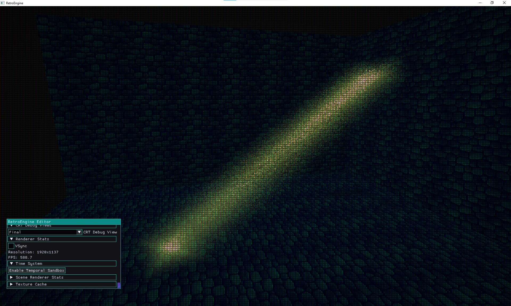
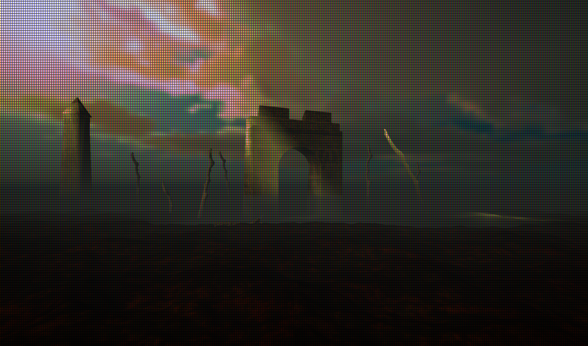

The Moment It Broke
This one started with something really simple.
I had a foggy outdoor scene, clouds, atmosphere… all that. And I wanted those classic “god rays” cutting through the sky.
Not realistic volumetrics. That very specific retro look where light is actually visible in the air.
And I just couldn’t do it.
I had lighting. I had fog. I had emissives.
But I had no way to make light exist between things.
That’s when it clicked that the real problem wasn’t outside. While this my original use-case, it wasn't the biggest issue.
It was interiors.
Inside, everything felt dead. Light would hit surfaces, sure, but you couldn’t see it move through space. No beams through windows. No shafts cutting across a room. No air.
Older games did this all the time, but in a really stylized way.
And I had… nothing.
The Goal
So I set a pretty clear goal:
- not physically correct
- not expensive
- not trying to fake real volumetrics
I wanted something that:
- feels like N64 / PS1 era light shafts
- is cheap and deterministic
- can be placed and shaped intentionally
- works indoors and outdoors
- is driven by the artist, not the renderer
Basically:
light as a shape, not a simulation.
First Pass: Just Get Something Working
The first version was about as simple as it gets.
Just a controllable volume:
- start / end
- rotation
- width / height
- color
- intensity

It technically worked.
But it felt like I just dropped a glowing box into the scene.
No life to it at all.
Getting It Into the World
Once I had something showing up, I started pushing it into real scenes.
Using windows. Aligning it with geometry. Actually treating it like part of the space instead of an overlay.

This is where it finally started to feel right.
Interiors immediately changed.
Still stylized. Still fake. But in a way that actually feels intentional.
The Balance Problem
This part took longer than I expected.
It’s really easy to mess this up.
- too much movement → looks like modern volumetric noise
- too clean → looks dead and fake
There’s a weird middle ground where it feels like “air” without actually simulating anything.
I ended up adding subtle movement using noise and time. Not enough to notice immediately, just enough that it doesn’t feel static.
This is where it stopped feeling like an “effect” and started feeling like mood.
Directional Shadows (Finally)
At this point the shafts looked good, but something still felt off.
Nothing felt grounded.
So I finally bit the bullet and added a real directional shadow map.
Light-space matrices, camera fitting, depth pass, sampling in the shader… all that fun stuff.
And yeah… this helped a lot.
Things actually sit in the world now.
The Real Problem: Color
But even after shadows, something still felt wrong.
Lighting wasn’t predictable.
If I pushed color:
- sometimes it washed everything out
- sometimes it replaced color instead of tinting
- sometimes it just didn’t show up depending on the surface
Blue objects ignoring red light was a big one. That just feels bad immediately.
Ambient would sometimes override instead of fill. Shadows would just go black.
At that point I stopped trying to “fix” it and just rethought the whole thing.
A Different Lighting Model
I ended up simplifying the model way down.
- Directional light = what gets hit
- Ambient light = what doesn’t
That’s it.
The shadow map just decides where directional light is removed.
So instead of:
light vs black
you get:
light color vs shadow color
Now I can:
- push warm light with cool shadows
- light interiors without destroying material color
- turn directional off entirely and just use ambient
This was the piece that made everything else actually usable.
Why This Matters
A lot of modern engines lean heavily into physically-based rendering.
Which is great if your goal is realism.
But it also means:
- lighting is constrained by rules
- color control is indirect
- you end up fighting the system to get something stylized
I’ve run into this a lot.
You try to push color and suddenly you’re debugging albedo response instead of just making something look good.
That’s not what I want.
Retro Game Engine is going the opposite direction.
White light should just look like the material. Color should shift predictably. Shadows should still have color.
It’s not physically correct.
But it’s controllable. And honestly that matters more for what I’m trying to build.
Where This Leaves Things
For the first time, lighting feels like something I can actually author instead of fight.
Light shafts give interiors life. Shadows ground the scene. Color actually does what I expect.
It all finally lines up.
150 Days Later
Today also marks 150 days working on this engine.
Which feels pretty crazy considering where this started.
Back then it was just getting pixels on screen.
Now it’s:
- a real rendering pipeline
- editor tools
- terrain
- fog
- emissives
- lighting systems that actually feel intentional
150 days of building Retro Game Engine: slowly turning into something I can actually make a game in.
Next
At this point most of the core pieces are there.
What’s left is tying everything together into a clean art pipeline and making the tools feel good to use.
Because I’m already starting to think about the game.
Not just systems. Not just rendering.
An actual game built in this.
And honestly….that’s the part I’ve been working toward this whole time.
Retro Game Engine is getting close.